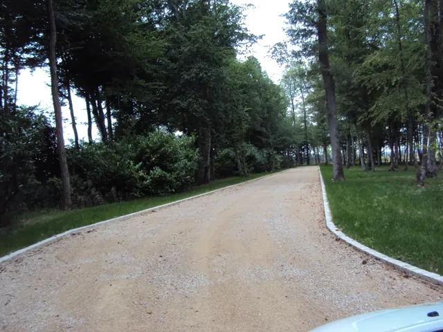
Photo SOCAPLa Chapelle-du-Châtelard · Ain (01)
Allée et cour
Terrassement, chemin en concassé, bordures en pavés granit, béton désactivé roulé Château, lignage de pavés en béton, plantations.
Société Châtillonnaise d’Aménagement et de Paysage
Paysagiste · Ain · Rhône · Mâconnais
Conception, réalisation et entretien de vos jardins. Un seul interlocuteur, du premier croquis au suivi après chantier. Depuis 1983.
01 — Notre entreprise
SOCAP, société châtillonnaise d’aménagement et de paysage, rassemble tous les corps de métier nécessaires à l’aménagement de vos espaces extérieurs. Spécialiste du végétal, nous travaillons aussi bien pour les professionnels et les collectivités que pour les particuliers.
Notre bureau d’étude vous conseille avec plan, étude des réseaux et palette de matériaux et de végétaux. Notre équipe de 10 paysagistes passionnés, qualifiés et formés traite chaque aménagement avec le même souci du détail.
Nous faisons partie du groupe Pépinières Daniel Soupe, dans l’Ain : des végétaux cultivés localement et de première qualité.
02 — Notre méthode
Notre bureau d’étude vous conseille : plan, étude des réseaux, palette de matériaux et de végétaux, pour proposer les solutions les plus adaptées à vos attentes.
On modèle le terrain : terrassement, murs, enrochements et soutènements, pour créer de vrais espaces de vie extérieurs.
Pavage, dallage, sable stabilisé, béton désactivé, terrasses bois ou composite, escaliers : le premier accès à votre maison.
Plantations, engazonnement, arrosage automatique, bassins et fontaines : le jardin prend vie.
Nous vous accompagnons tout au long du chantier et assurons le suivi après sa réalisation.
03 — Nos prestations
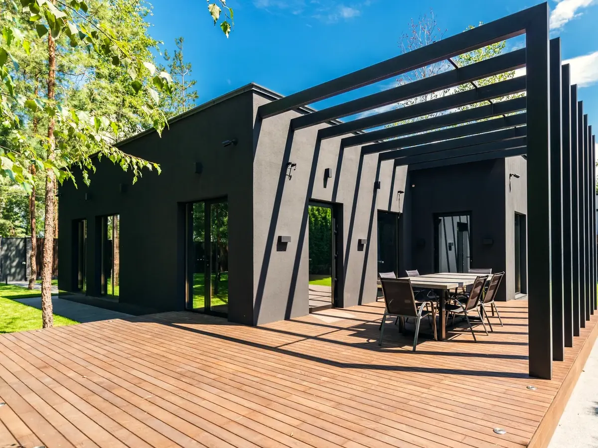
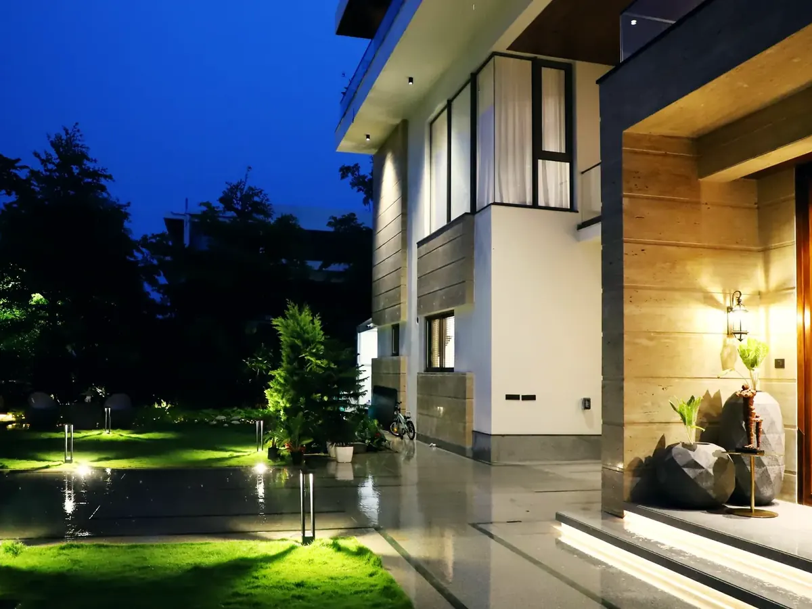
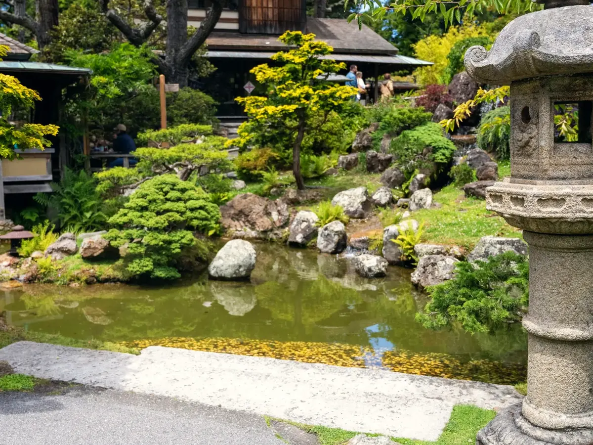
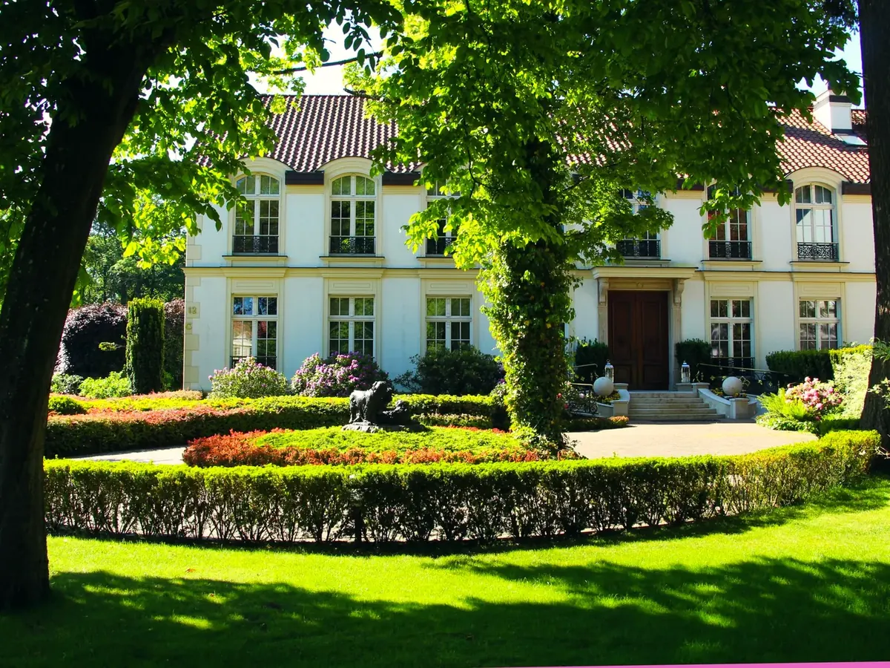
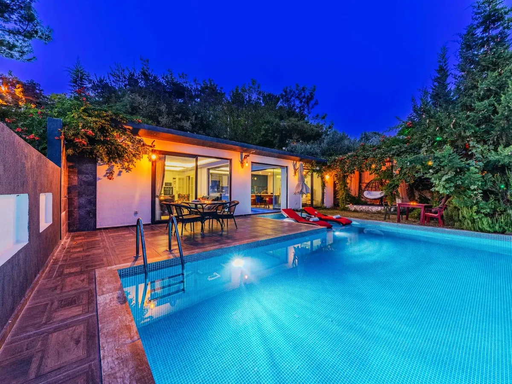
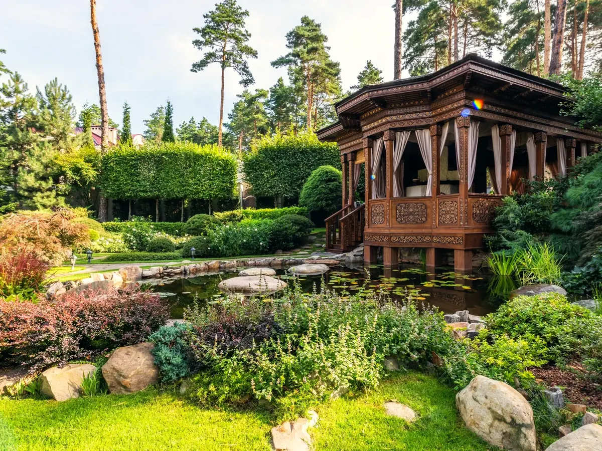
Contemporain · Jour
Photo d’illustration
Studio d’ambiance
Choisissez un style, jouez avec la lumière, ajoutez vos envies : on vous prépare une étude sur mesure.
04 — Réalisations SOCAP

Photo SOCAPTerrassement, chemin en concassé, bordures en pavés granit, béton désactivé roulé Château, lignage de pavés en béton, plantations.
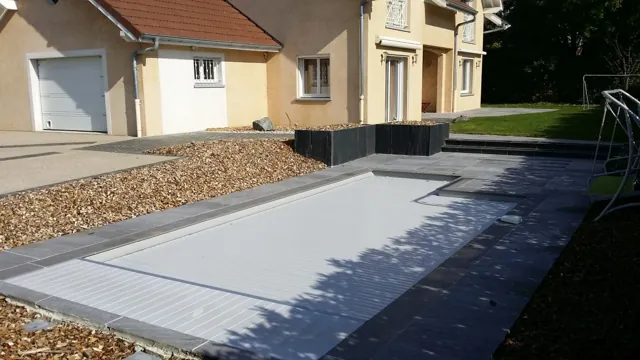
Photo SOCAPTerrasse en grès cérame, escalier béton habillé grès cérame, cour en béton désactivé, allée en pavés basalte, jardinières en palis d’ardoise, arrosage automatique, plantations, engazonnement.
Conception : Intérieur et Paysage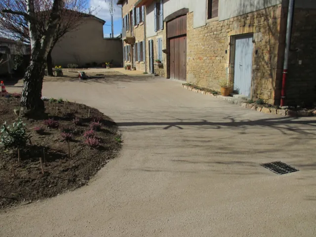
Photo SOCAPTerrassement, sablé renforcé, bordures acier, pavage en granit beige.
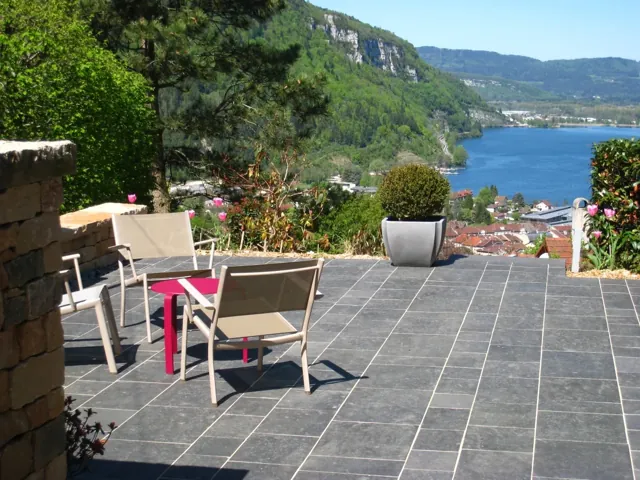
Photo SOCAPPavage, béton désactivé, marches pierre, dallage basalte, muret granit, plantations, muret pierre sèche.
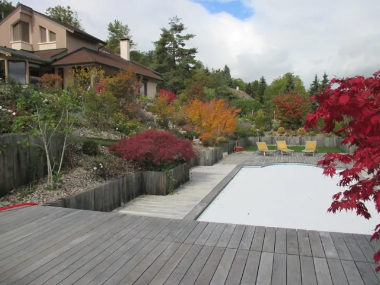
Photo SOCAPTerrasse bois en ipé, escaliers et pas japonais en pierre de Chandore, soutènement en traverses de chêne, arrosage automatique, plantations et engazonnement.
Conception : Bellion-Jourdan, Art-Design & NatureVictoires du paysage 2018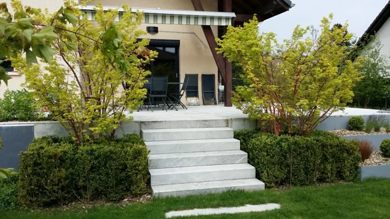
Photo SOCAPTerrasse pierre, escalier et pas japonais en Bleu de Savoie, platelage en composite, gazon de placage, fontaine, pergolas, plantations.
Conception : Bellion-Jourdan, Art-Design & Nature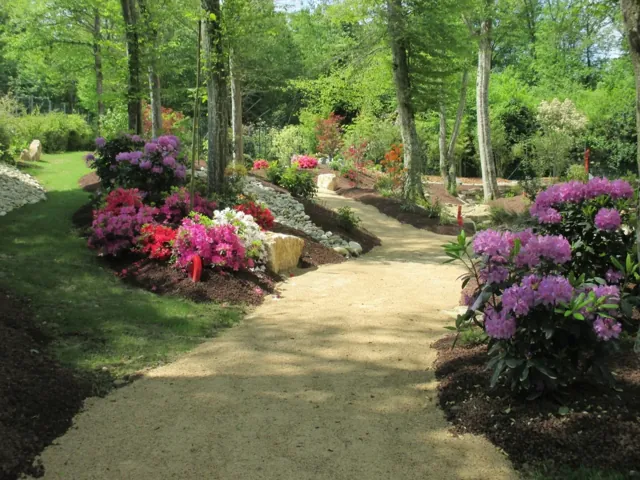
Photo SOCAPDans un site ombragé et vallonné : chemin en sablé, enrochements, rivière, galets, bassin, plantes de terre de bruyère et d’ombre, pas japonais en ardoise et pierre de Saint-Martin-Belleroche.
Charte UNEP
Nos salariés sont des professionnels formés, qui respectent les règles de nos métiers.
Nous sommes forces de proposition et réalisons un projet adapté à vos besoins, à vos envies et à votre budget.
Nous expliquons clairement nos contrats, nos devis, nos délais, et nous les respectons.
Nous vous accompagnons tout au long du chantier et assurons le suivi après sa réalisation.
Nous vous conseillons sur les végétaux, les matériaux, la biodiversité, et répondons à vos questions.
Nous mesurons, avec votre accord, votre niveau de satisfaction.
05 — Où nous intervenons
Basés à Châtillon-sur-Chalaronne, nous concevons, réalisons et entretenons votre jardin dans un large rayon autour de l’Ain, jusqu’à Lyon et Mâcon.
Carte indicative : les anneaux montrent des distances à vol d’oiseau depuis Châtillon-sur-Chalaronne. Points verts : réalisations présentées sur ce site.
06 — Contact
Devis et étude sur simple demande. Concevoir, réaliser et entretenir votre jardin : racontez-nous votre projet, nous revenons vers vous.
Appelez-nous04 74 55 00 98SOCAP · Société Châtillonnaise d’Aménagement et de Paysage
Les Lazares
01400 Châtillon-sur-Chalaronne
Fax 04 74 55 27 56